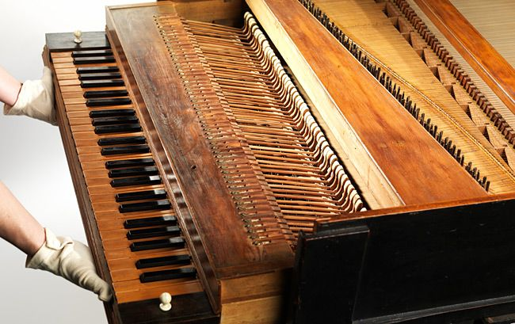
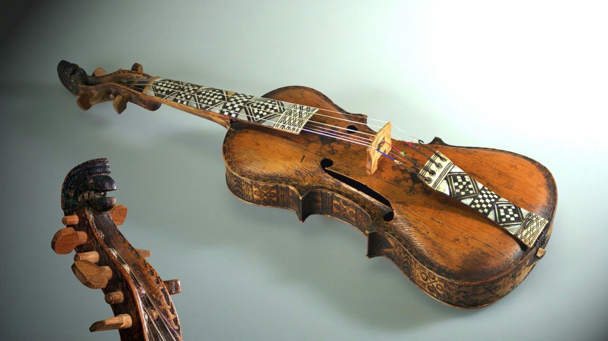
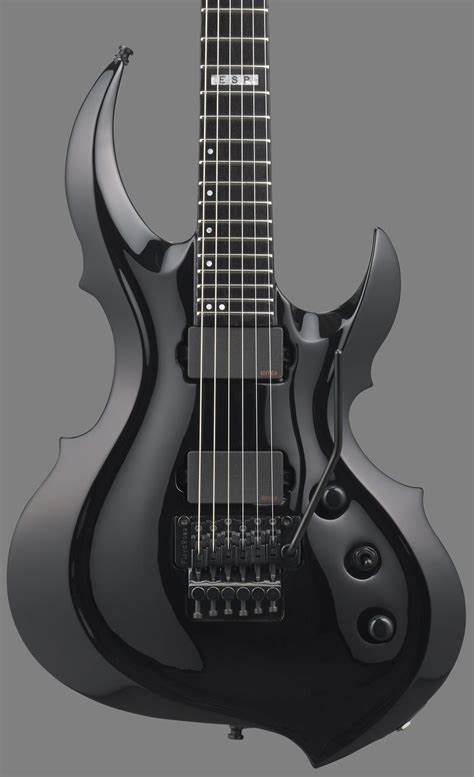
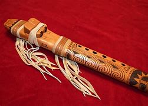

Thrill And
Excitement.
Price: 200$ - 400$
Introducing
The Vintera Series
Introducing
Gravicembalo Col
Piano Made Circa

From an alternative reality
The Meteora Guitars
Best choice for music
Our Best Selling Music Gear
Neanderthal flute
$250 - $300
Carlinet
$250 - $300
veena
$250 - $300
Tablaa
$250 - $300


Why Choose Us
Why choose [4Music]? Because we are more than just a marketplace – we are curators, storytellers, and advocates for the preservation of musical heritage. Our commitment is to connect you with instruments that carry a unique resonance and charm, ensuring that the magic of the past continues to reverberate into the future. Join us on a journey through the ages, where each instrument has a tale to tell and a melody to share. [4Music] invites you to explore, appreciate, and perhaps even take home a piece of musical history. Let the symphony of the past resonate in your present, as we bridge the gap between eras through the enchanting language of vintage instruments. Welcome to a world where every note is a piece of history waiting to be rediscovered.
Best Quality
HandMade
Organized

What is special ?
Discover the magic of aged wood, the character in each patina, and the artistry behind every curve and contour. From timeless acoustic guitars that have strummed through decades of melodies to classic brass instruments that have heralded the passage of time, our inventory is a testament to the enduring allure of vintage musical craftsmanship.

New Carlinet modified 1759
$1350 $899
10+ in stock
Clarinet, single-reed woodwind instrument used orchestrally and in military and brass bands and possessing a distinguished solo repertory. It is usually made of African blackwood and has a cylindrical bore of about 0.6 inch (1.5 cm) terminating in a flared bell. All-metal instruments are made but are little used professionally. The mouthpiece, usually of ebonite (a hard rubber), has a slotlike opening in one side over which a single reed, made from natural cane, is secured by a screw clip, or ligature, or (in earlier times and still often in Germany) by string lapping. The player grips the mouthpiece, reed down, between his lips or lower lip and upper teeth.
Feel free to contact us